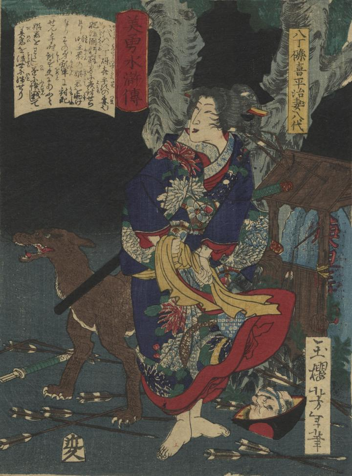

八丁礫喜平治の妻、八代の足下に傘をかぶった生首がある。
著作者：一魁芳年／出典：親書誌：U426_nichibunken_0360：美勇水滸伝 八丁礫喜平治妻八代；ビユウ スイコデン ハッチョウ ツブテ キヘイジ ツマ ヤツシロ／日付：2014／資源識別子：U426_nichibunken_0360_0001_0000
Copyright (c)2010- International Research Center for Japanese Studies, Kyoto, Japan. All rights reserved.